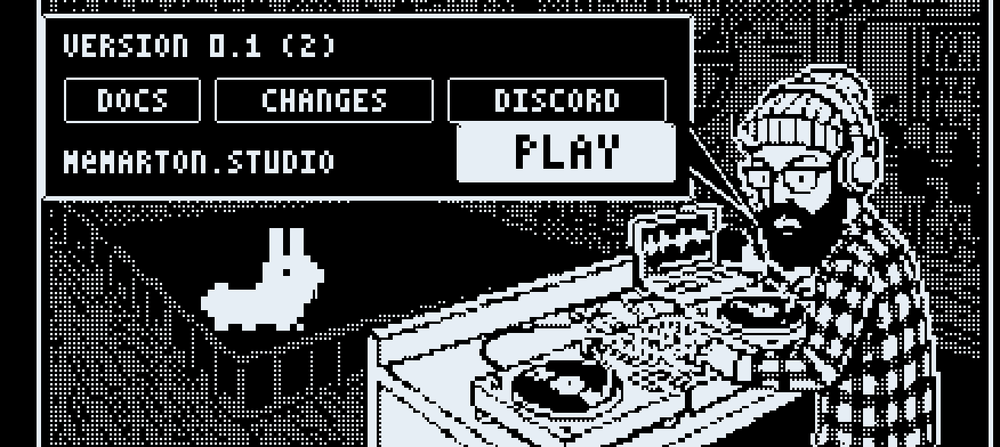

Welcome

Holy Grail is a companion app for Elektron boxes. It runs on a phone or tablet next to your box and adds new sound engines, a looper, effects, a mixer and a recorder. One USB cable carries audio and MIDI both ways.
The box stays in charge. Its sequencer plays the app's synths from MIDI tracks, its knobs turn the app's controls, and its tempo and pattern changes drive everything in the app.
What is in it
| Part | What it is |
|---|---|
| Four parts | Four sound slots, each on its own MIDI channel. Each part runs one engine. See Parts and engines. |
| Three synths | SYNTH ONE, HOLY_ACID and HOLY_DEX. |
| Four samplers | HOLY_KIT, HOLY_GRAIN, HOLY_STRETCH and HOLY_SLICE. |
| Looper | Loops the box and the app in time with the box. See Looper. |
| Effects | SPACE, DRIVE and COMP. PUMP is on the mixer. |
| Mixer | Levels for the parts, the looper, the box and the master. See Mixer. |
| Recorder | Records the whole mix as audio, and as video on iOS. See Recorder. |
Where to start
Do the first setup once. It takes a few minutes and covers the cable, the settings on the box and what the app should show when it works.
Then read the main page. The rest of the docs is one page per screen: look a screen up when you need it.
How to read these docs
- Words in capitals, like SETUP or LOAD, are labels you see on the screen of the app or the box.
- "The box" is your Elektron box. Which ones work is listed in Boxes.
- The pictures are drawn by the app's own code, so they show the screens as they are in the app.
- The left and right arrow keys move between pages.